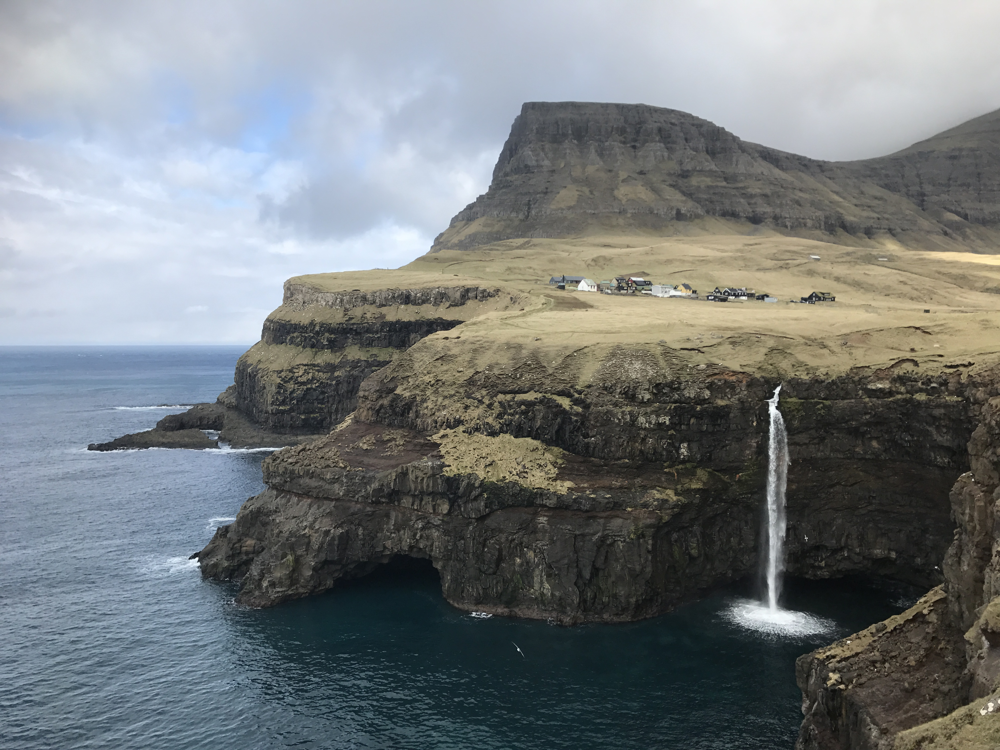
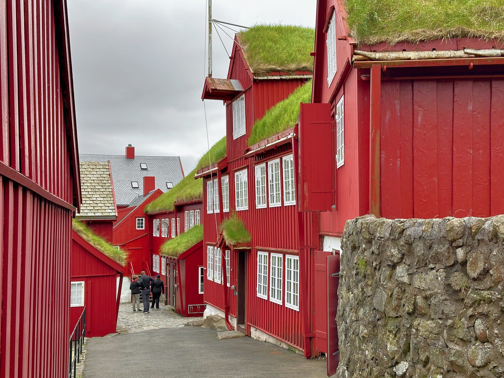
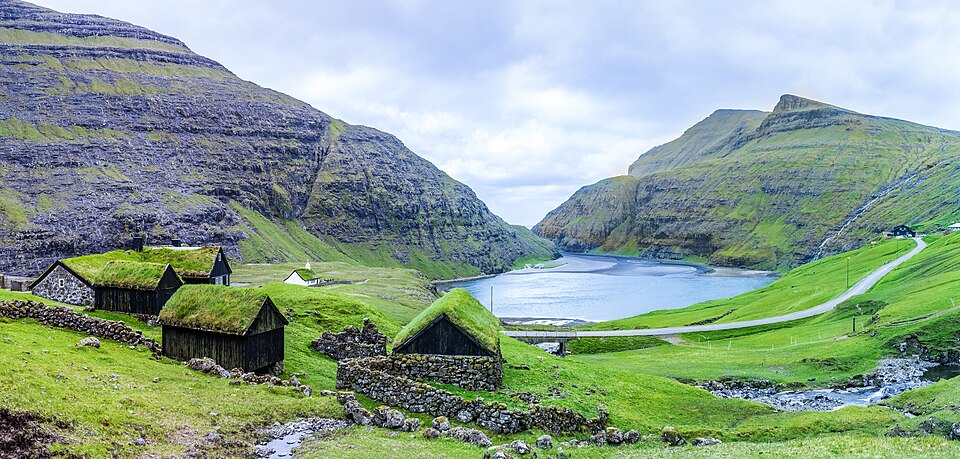
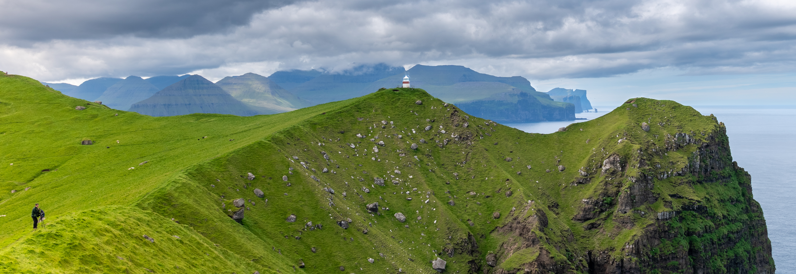

| Jour | Trajet / ferry | Liens |
|---|---|---|
| Jour 1 — 12/06 | CDG → Vágar • prise voiture • trajet court | Aéroport |
| Jour 2 — 13/06 | Vágar → (Mykines option ferry) → Tórshavn | Route |
| Jour 3 — 14/06 | Boucle Streymoy (Saksun/Tjørnuvík/Eiði) | Saksun • Eiði |
| Jour 4 — 15/06 | Eysturoy (Gjógv + belvédères) A/R | Gjógv |
| Jour 5 — 16/06 | Tórshavn → Klaksvík (transfert) | Route |
| Jour 6 — 17/06 | Ferry Klaksvík ↔ Kalsoy • rando Kallur | Ferry |
| Jour 7 — 18/06 | Klaksvík → Vágar + Trælanípa | Trælanípa |
| Jour 8 — 19/06 | Restitution voiture + vol RC424 12:20 | Aéroport |


| Date | Logement | Km (≈) | Visites principales | Sites remarquables |
|---|---|---|---|---|
| 12/06 | Vágar | ≤ 15 km | Arrivée + village | Port de Sørvágur |
| 13/06 | Tórshavn | ≈ 110 km | Mykines (opt.) + Gásadalur | Múlafossur, Bøur |
| 14/06 | Tórshavn | ≈ 120 km | Saksun + Tjørnuvík + Eiði | Lagune Saksun, Risin & Kellingin |
| 15/06 | Tórshavn | ≈ 150 km | Gjógv + belvédères | Gorge, falaises |
| 16/06 | Klaksvík | ≈ 70–90 km | Transfert + port | Panoramas fjord |
| 17/06 | Klaksvík | ≈ 20–40 km (+ ferry) | Kalsoy : Kallur | Phare + crêtes |
| 18/06 | Vágar | ≈ 100 km | Trælanípa | Lac au-dessus de l’océan |
| 19/06 | — | ≤ 15 km | Départ | Vol 12:20 |


Photos “logements” : par défaut, on n’intègre pas de photos Booking (droits). À la place, on garde des photos libres de droit des zones + liens directs de recherche.
| Jour | Zone logement | Liens rapides |
|---|---|---|
| Jour 1 — 12/06 | Vágar (Sørvágur / proche aéroport) | Hébergements (Google Maps) • Hôtels • Apparts |
| Jour 2 — 13/06 | Tórshavn (base 3 nuits) | Hébergements (Google Maps) • Hôtels • Apparts |
| Jour 3 — 14/06 | Tórshavn | Hébergements (Google Maps) • Hôtels • Apparts |
| Jour 4 — 15/06 | Tórshavn | Hébergements (Google Maps) • Hôtels • Apparts |
| Jour 5 — 16/06 | Klaksvík (base 2 nuits) | Hébergements (Google Maps) • Hôtels • Apparts |
| Jour 6 — 17/06 | Klaksvík | Hébergements (Google Maps) • Hôtels • Apparts |
| Jour 7 — 18/06 | Vágar (veille départ) | Hébergements (Google Maps) • Hôtels • Apparts |
| Jour 8 — 19/06 | — | Hébergements (Google Maps) • Hôtels • Apparts |
index.html et être à la racine du repo.{kind=link}
{kind=link}